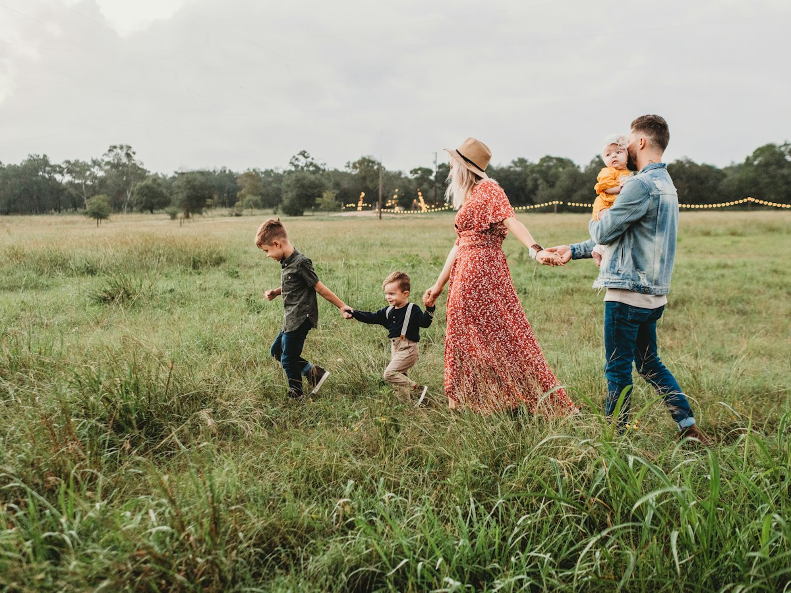
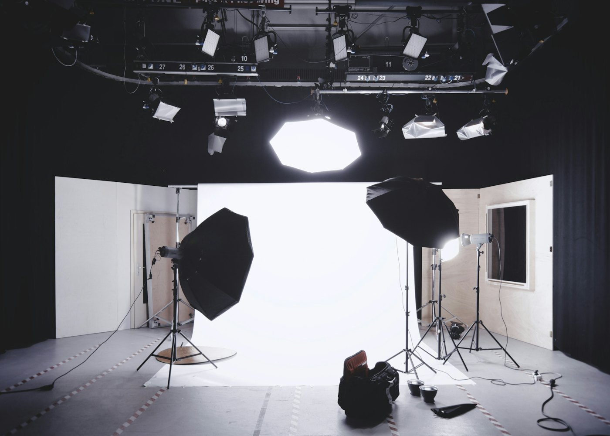

Estúdio de família em Santa Bárbara d'Oeste desde 1986
Ensaio de gestante, newborn e famíliacom quem fotografa a cidade há 40 anos
A barriga, os primeiros dias do bebê, a família toda junta. Escolha o seu ensaio e combine data e detalhes direto com a Iris pelo WhatsApp.
de família
Monte o seu ensaio
Toque nos ensaios que você quer. Ao lado, conte o momento (semanas de gestação ou idade do bebê) e o mês. A mensagem pronta vai para o WhatsApp da Iris.
Barriga, pezinhos e abraço apertado
Fotos ilustrativas. No site final, esta galeria mostra os ensaios feitos pela Iris, os mesmos que hoje estão no Instagram.


Uma família que fotografa famílias
A Iris Fotografias é um negócio de família e está no ramo desde 1986, na Av. da Indústria, em Santa Bárbara d'Oeste. Muita coisa mudou de lá pra cá, do filme ao digital. O cuidado com quem entra no estúdio continua o mesmo.
Texto de exemplo. No site final entra a história contada pela própria família.
Como funciona
Texto de exemplo. No site final entra o jeito de trabalhar da Iris.
Conversa
Você chama no WhatsApp e conta o que imagina para o ensaio.
Data marcada
Combinamos o melhor momento: semanas de gestação ou dias de vida do bebê.
Dia do ensaio
No estúdio ou ao ar livre, no tempo de vocês.
Entrega
Você recebe as fotos tratadas para guardar e imprimir.
Quem acompanha a Iris
Onde fica o estúdio
- Endereço
- Av. da Indústria, 523
Santa Bárbara d'Oeste, SP - (19) 97115-3997
- @irissfotografias
- Horários
- Combine o seu pelo WhatsApp.
A barriga cresce rápido.O bebê também.
Garanta a data do seu ensaio enquanto o momento está acontecendo.
Chamar a Iris no WhatsApp